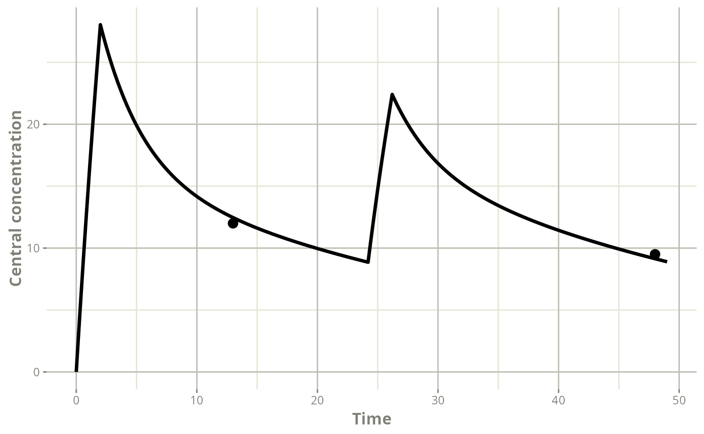

AUC-based dosage adjustment for a patient treated with vancomycin for methicillin-resistant Staphylococcus aureus blood stream infection, using the population pharmacokinetic (ppk) model of Goti et al. 2018, using the data from therapeutic drug monitoring (TDM).
mod_vancomycin_Goti2018 <- list(
ppk_model = rxode2::rxode({
centr(0) = 0;
TVCl = THETA_Cl*(CLCREAT/120)^0.8*(0.7^DIAL);
TVVc = THETA_Vc*(WT/70) *(0.5^DIAL);
TVVp = THETA_Vp;
TVQ = THETA_Q;
Cl = TVCl*exp(ETA_Cl);
Vc = TVVc*exp(ETA_Vc);
Vp = TVVp*exp(ETA_Vp);
Q = TVQ;
ke = Cl/Vc;
k12 = Q/Vc;
k21 = Q/Vp;
Cc = centr/Vc;
d/dt(centr) = - ke*centr - k12*centr + k21*periph;
d/dt(periph) = + k12*centr - k21*periph;
d/dt(AUC) = Cc;
}),
error_model = function(f,sigma){
g <- sigma[1] + sigma[2]*f
return(g)
},
theta = c(THETA_Cl=4.5, THETA_Vc=58.4, THETA_Vp=38.4,THETA_Q=6.5),
omega = lotri::lotri({ETA_Cl + ETA_Vc + ETA_Vp + ETA_Q ~
c(0.147,
0 , 0.510,
0 , 0, 0.282,
0 , 0, 0, 0)}),
covariates = c("CLCREAT","WT","DIAL"),
sigma = c(additive_a = 3.4, proportional_b = 0.227))The dosage selection can be informed using the results of TDM. See
vignette("patient_data_input") for more details regarding
the patient records.
df_patientB <- data.frame(ID=1,TIME=c(0.0,13.0,24.2,48),
DV=c(NA,12,NA,9.5),
AMT=c(2000,0,1000,0),
DUR=c(2,NA,2,NA),
EVID=c(1,0,1,0),
CLCREAT=65,WT=70,DIAL=0)
df_patientB
#> ID TIME DV AMT DUR EVID CLCREAT WT DIAL
#> 1 1 0.0 NA 2000 2 1 65 70 0
#> 2 1 13.0 12.0 0 NA 0 65 70 0
#> 3 1 24.2 NA 1000 2 1 65 70 0
#> 4 1 48.0 9.5 0 NA 0 65 70 0
patB_map <- poso_estim_map(dat=df_patientB,
prior_model=mod_vancomycin_Goti2018)The individual pharmacokinetic profile can be plotted using the
rxode2 model provided by the poso_estim_map()
function.
plot(patB_map$model,Cc)Using ggplot2 the observed data points can be added to
the plot
#Get the observations from the patient record
indiv_obs <- df_patientB[,c("DV","TIME")]
names(indiv_obs) <- c("value","time")
#Overlay the MAP profile and the observations
plot(patB_map$model,Cc) +
ggplot2::ylab("Central concentration") +
ggplot2::geom_point(data=indiv_obs, size= 3, na.rm=TRUE)
The MAP profile matches the observations.
Considering a MIC of 1 mg/L, the target AUC over 24 hours (AUC24) is
400 mg.h/L. The AUC can be retrieved from the rxode2 model
using the usual R data.frame syntax.
#AUC 0_24
AUC_map_first_dose <- patB_map$model$AUC[which(patB_map$model$time == 24)]
AUC_map_first_dose
#> [1] 337.8965
#AUC 24_48
AUC_map_second_dose <- patB_map$model$AUC[which(patB_map$model$time == 48)] - AUC_map_first_dose
AUC_map_second_dose
#> [1] 325.3072The current dosage does not meet the target AUC.
The next dose needed to achieve an AUC24 of 400 mg.h/L can be estimated using TDM data.
poso_dose_auc(dat=df_patientB,
prior_model=mod_vancomycin_Goti2018,
tdm=TRUE,
time_auc=24, #AUC24
time_dose = 48, #48 h: immediately following the last observation
duration=2, #infused over 2 h
target_auc=400)
#> $dose
#> [1] 1411.593
#>
#> $type_of_estimate
#> [1] "point estimate"
#>
#> $auc_estimate
#> [1] 400
#>
#> $indiv_param
#> THETA_Cl THETA_Vc THETA_Vp THETA_Q ETA_Cl ETA_Vc ETA_Vp CLCREAT
#> 4 4.5 58.4 38.4 6.5 0.08208203 0.06122374 0.06285943 65
#> WT DIAL
#> 4 70 0The optimal dose estimated for the next infusion is 1411 mg.
The maintenance dose needed to reliably achieve an AUC24 of 400
mg.h/L can be estimated by simulating a multiple dose regimen over
enough administrations (e.g. 11 consecutive administrations, with
add_dose=10) to approximate the steady-state.
poso_dose_auc(dat=df_patientB,
prior_model=mod_vancomycin_Goti2018,
time_auc=24,
starting_time=24*9,
interdose_interval=24,
add_dose=10,
duration=2,
target_auc=400)
#> $dose
#> [1] 1198.266
#>
#> $type_of_estimate
#> [1] "point estimate"
#>
#> $auc_estimate
#> [1] 400
#>
#> $indiv_param
#> THETA_Cl THETA_Vc THETA_Vp THETA_Q ETA_Cl ETA_Vc ETA_Vp CLCREAT WT
#> 1 4.5 58.4 38.4 6.5 0.08208199 0.06122337 0.0628591 65 70
#> DIAL
#> 1 0The optimal maintenance dose is 1200 mg.
The maintenance dose for a continuous intravenous infusion can be
easily determined by setting the duration of the infusion
equal to the interdose_interval.
poso_dose_auc(dat=df_patientB,
prior_model=mod_vancomycin_Goti2018,
time_auc=24,
starting_time=24*9,
interdose_interval=24,
add_dose=10,
duration=24,
target_auc=400)
#> $dose
#> [1] 1198.923
#>
#> $type_of_estimate
#> [1] "point estimate"
#>
#> $auc_estimate
#> [1] 400
#>
#> $indiv_param
#> THETA_Cl THETA_Vc THETA_Vp THETA_Q ETA_Cl ETA_Vc ETA_Vp CLCREAT
#> 1 4.5 58.4 38.4 6.5 0.08208202 0.06122453 0.06285936 65
#> WT DIAL
#> 1 70 0The optimal maintenance dose is also 1200 mg / 24 h for a continuous intravenous infusion.